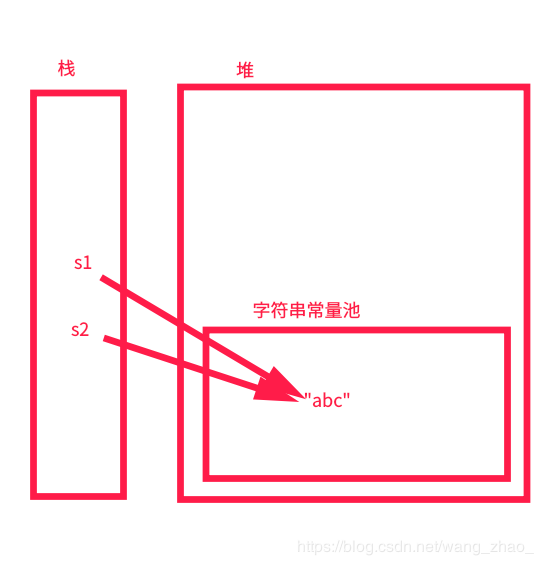
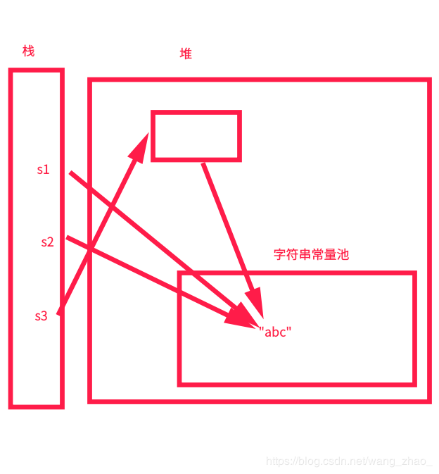
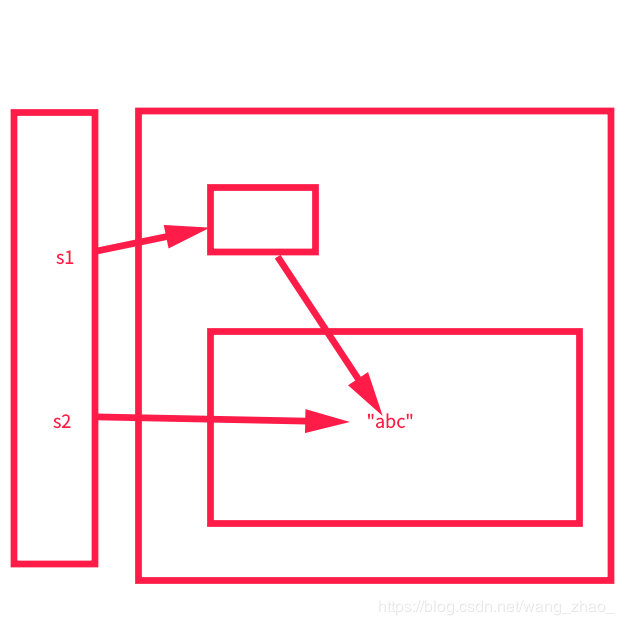

Java基础提高(三)
本次开始介绍String类及其相关类，String首先声明这是一个引用类型。很多学习了一段时间Java的人依然认为这是一个基本类型，大概是因为像基本类型一样经常使用吧。但必须知道这并不是基本类型，而是引用类型，否则人家问你时不是闹了个笑话吗？
1.String
为什么要介绍String，因为在我们的程序代码中，会经常用到String，而String存在一些知识盲区你可能并不了解。
首先要知道的是该类是一个final类，即你并不能去继承该类。为什么要这样设计？我个人有两点看法：（1）因为sun认为该类已经很完美了，不需要被继承；2）我们在传输数据时，大量的用到字符串，如果你继承String，却不能够严谨完善的实现其功能，容易造成数据不安全。
1 | public final class String |
其次，我们都知道String是一个不可变字符串，那么为什么是不可变字符串？是因为String数组内部封装了一个final数组？
1 | private final char value[]; |
对于被final修饰的引用类型，只是其地址值不可以改变，那么其数组下标中的元素可以改变吗？答案是可以的，如下所示：
1 | public static void main(String[] args) throws NoSuchFieldException, IllegalAccessException { |
注意最后输出的是true，那么则说明地址并没有发生变化，我们确实改变了String的值。
那么事情这么简单吗？如果我们打印hashCode会有变化吗？运行后发现hashCode的值并没有发生变化，这是为什么呢？要知道不在反射的情况下，这两个的字符串的hashCode并不相同？这是因为在我们创建String对象的时候，便已经计算了hashCode的值？如下：
1 | public String(String original) { |
而我们在反射的过程中，并没有进行hashCode值的更新，所以如果要反射更换值时要更新hashCode，同时只能改变数组元素的值。
存在如下一组代码：
1 | String s1 = "abc"; |
输出：
1 | true |
这是因为以非 new 的方式创建String时，首先到字符串常量池中查找目标字符串。若不存在，则在常量池中直接创建该字符串并返回引用。若存在，则直接返回返回引用。

而执行到String s3 = new String(“abc”);时，我们每一次new时，都是在堆中创建对象，又因为字符串常量池已经存在目标值，所以内存图如下：

在我们使用new创建字符串时，如果目标串不在字符串常量池时，会将目标串加到字符串常量池中，然后继续在堆中分配内存。
在这里留下一个问题，即如果我们以下面这种方式创建字符串的话，那么会不会将字符串加入到常量池中？
1 | String s = new String("a")+new String("b"); |
首先可以明确的知道”a”和”b”在字符串常量池中，那么”ab”在不在字符串常量池中呢？我们待会进行验证。
String类中存在这样一个方法intern()
1 | /** |
从注释可知，当我们调用这个方法时，如果常量池中存在和目标串相同的值，则返回常量池中的地址。否则，直接返回引用，并且将目标串加入到字符串常量池中。示例如下：
1 | String s1 = new String("ab"); |
内存图如下：

所以这里输出的是false。现在回到我们上面的问题，当我们以 + 进行字符串拼接时会不会加入到字符串常量池中？示例代码如下：
1 | String s1 = new String("a") + new String("b"); |
即我们在执行String s1 = new String(“a”) + new String(“b”);并不会将”ab”加入到字符串常量池中。
2.StringBuilder
正是由于String是不可变字符串，我们对String的每一次修改操作都产生了新的String。这样有时不符合我们的需求，所以便又产生了可变字符串。StringBuilder和StringBuffer。
首先需要声明的便是StringBuild是可变字符串，接着我们开始研究其源码。通过观察源码后，发现StringBuild通过继承AbstractStringBuilder获得其成员变量，而AbstractStringBuilder存在一个char数组。
1 | abstract class AbstractStringBuilder implements Appendable, CharSequence { |
在我们创建StringBuild数组时，默认创建一个长度为16的字符数组。
1 | public StringBuilder() { |
在我们给StringBuild添加元素时，有人认为是将整体放入数组中的下标，通过观察源码这是并不是正确。如下：
1 | StringBuilder sb = new StringBuilder(); |
并不是将123整个放入数组中的元素，而是分割开,分别放入数组中的元素。
3.StringBuffer
如果你观察StringBuffer的源码，发现StringBuilder的差别几乎没有，唯一的大区别大概就是StringBuffer中的方法被synchronized，而synchronized的作用就是为了保证线程安全。
什么是线程安全问题？即多个线程同时对一份资源进行读写操作（注意：只进行读操作并不会产生线程安全问题），这样会导致数据混乱。
而在多线程环境下，我们可以通过synchronized实现每次对一份资源进行读写操作只有一个线程执行。
所以StringBuffer与StringBuild最大的区别就是线程是否安全。
| 类 | 是否线程安全 | 是否可变 |
|---|---|---|
| String | 安全 | 不可变 |
| StringBuilder | 不安全 | 可变 |
| StringBuffer | 安全 | 可变 |